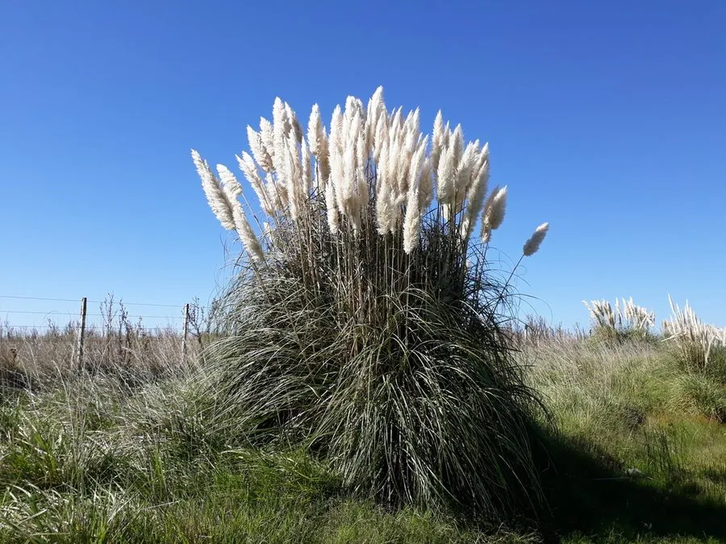

花卉与草本 · 植物界
蒲苇 Cortaderia selloana

禾本科多年生高大草本，银白色羽状花序如蓬松的羽毛，是花境与干花中的大型观赏草，原产南美草原。
- 分类
- 门被子植物门纲木兰纲目禾本目科禾本科属蒲苇属
- 栖息环境
- 南美草原的湿润至半干旱地带，喜光、耐旱、耐盐碱
- 地理分布
- 原产南美洲，世界各地栽培，部分温暖地区逸生为入侵植物
- 保护级别
- 暂无评估；在部分地区逸生为入侵植物
物种志
蒲苇为禾本科蒲苇属多年生草本，株高 1.5–3 米，丛生，茎秆粗壮。叶片带状，长 1–2 米，边缘粗糙。圆锥花序大型，长 30–100 厘米，银白色或淡粉色，羽状蓬松，花期 8–10 月；果实为颖果。雌雄异株，雌花序的羽毛状花柱更为明显。
蒲苇原产南美洲的草原，喜阳光充足、温暖和排水良好的环境，耐旱耐盐碱，适应性强，在部分地区逸生后成为入侵植物。它花序蓬松如羽毛，是花境中极具视觉冲击力的大型观赏草，也常用于干花和景观布置；秋季花序成熟后可剪下插瓶或作装饰。栽培以分株繁殖为主，株型高大，需预留足够空间并防止倒伏。
形态与习性
- 株高1.5–3 米，丛生
- 花期8–10 月，花序长 30–100 厘米
- 果期秋季结颖果
- 光照极喜光
- 水分耐旱，忌积水
- 土壤疏松、排水良好的壤土
- 繁殖以分株繁殖为主
- 主要用途花境、干花、景观布置
趣味知识
- 蒲苇的银白色羽状花序十分蓬松，是大型观赏草的代表。
- 它雌雄异株，雌花序的羽毛状花柱更为明显。
- 蒲苇原产南美草原，在部分地区逸生后成为入侵植物。
- 秋季花序成熟后可剪下插瓶或制作干花。